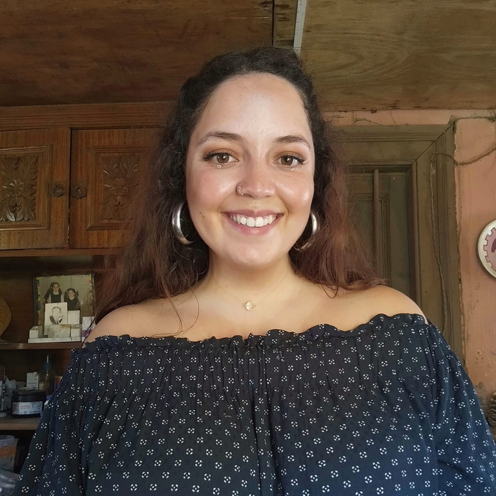

Curriculum Vitae

Josefa Zuñiga
Linkedin
Estudios superiores
- Estudiante de Pedagogía en Matemáticas para E. Media
Pontificia Universidad Católica de Chile (2019-2023)
- Tercer año de Ingeniería Comercial
Universidad de Santiago de Chile (2016-2018)
Habilidades y competencias laborales
Persona proactiva, comprometida con los principios de cada institución,
responsable, muy buen trabajo en grupo, excelentes relaciones interpersonales,
solidaria, con alto compromiso por el cumplimiento de objetivo y proactiva.
Experiencia laboral
- Asistente Comercial Banco Santander (2016)
- Asistente Comercial WebClass (2017)
- Profesora de Matemáticas MathLand (2022)
Experiencia voluntariados
- Fundacion Por Una Carrera (2019)
- Jefa de Escuela SUS (2019-2022)
Portafolio